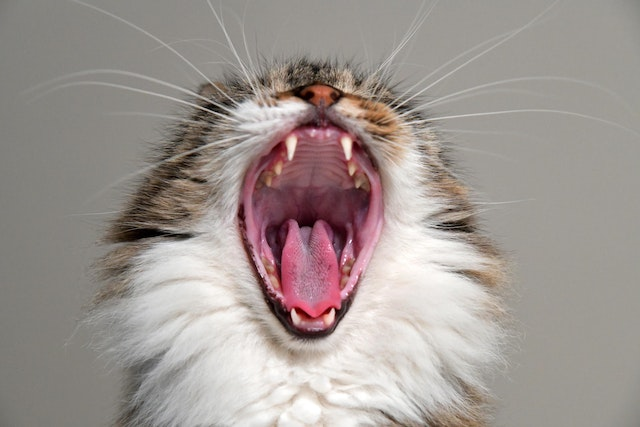

Zahnmedizin
Zahnschmerzen können uns Tiere leider nicht mitteilen. Allerdings können regelmäßige Prophilaxe, Plaquekontrollen als Vorsorgemaßnahme, Zahnerkrankungen und dadurch bedingte Folgeschäden weitesgehend vorgebeugt und zusätzlicher Stress für das Tier und Kosten minimiert werden. Weiterlesen